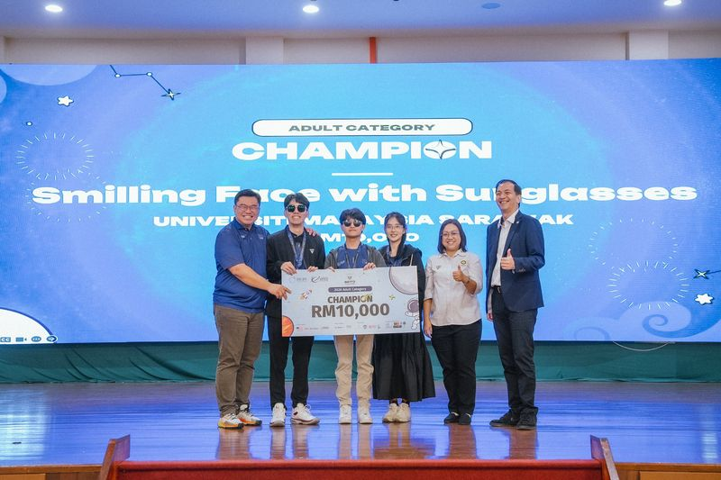
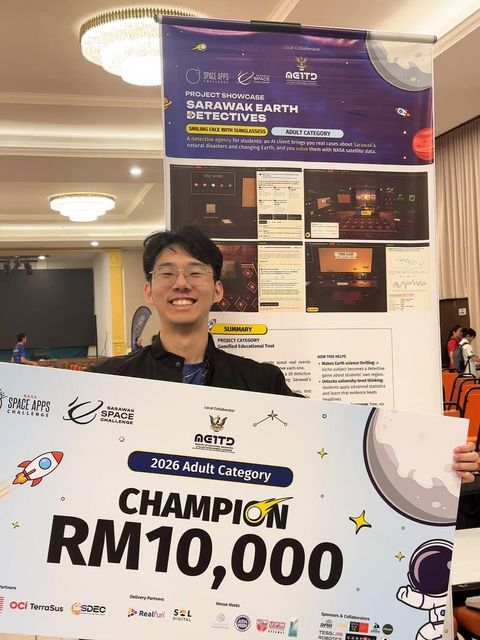

Hackathon · Sarawak Space Challenge 2026
Sarawak Earth Detectives
A detective game for students. You get real cases about floods, haze and fires in Sarawak, and solve them with NASA data.
Champion, Sarawak Space Challenge · Global nominees for NASA Space Apps Challenge 2026.


About the project
We built a detective agency game for students. An AI client brings cases about floods, haze, peat fires and dry spells in Sarawak, and students use decades of NASA Earth data to choose evidence, test whether a change is real and write their verdict.
Sarawak Space Challenge 2026 · Local NASA Space Apps event · “Be An Earth System Trend Detective!” challenge